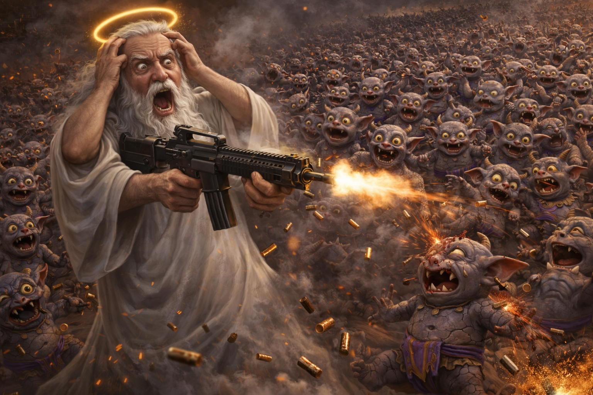

Спецкор Архангел Михаил — С поверхности Нибиру — 18+
На 847-й день Эпохи ЧЗХ Всевышний принял решение, которое навсегда изменило ход Священной Войны. После провального батла, ответного дисса на бесплатном хостинге и полного игнорирования дипломатических ультиматумов, Бог взял автомат.
«Я пробовал слова. Я пробовал батл. Я пробовал ультиматум. Они ответили "ГЫЫЫ" и выложили дисс на .static2.website. Всё. Переговоры окончены.»
В 04:47 по Небесному Времени Бог материализовался на поверхности Нибиру в полном боевом облачении: белая роба, нимб на максимальной яркости, автомат калибра "Божественный Гнев".
Орда ГронПукарианцев — по оценкам разведки Серафимов, от 12 до 15 тысяч особей — ринулась навстречу. Каждый лыбился. Каждый. Без исключения.
«Они бежали на меня ТЫСЯЧАМИ. И каждый ЛЫБИЛСЯ. Я стреляю — они лыбятся. Я стреляю СИЛЬНЕЕ — они лыбятся ШИРЕ. Один, сука, крикнул "ГЫЫЫ" перед тем как улететь в стратосферу. Я Бог. Я создал стратосферу. И вот этот мелкий фиолетовый пидорас использует МОЮ стратосферу как батут.»

Я СОЗДАЛ ПОРОХ.
Я СОЗДАЛ МЕТАЛЛ.
Я СОЗДАЛ ФИЗИКУ ОТДАЧИ.
И ДАЖЕ ЭТОГО НЕДОСТАТОЧНО.
ЧЗХ БЛЯТЬ.
ЧЗХ В ПЯТОЙ СТЕПЕНИ.
847 ГронПукарианцев уничтожено. Свыше 12,000 продолжают лыбиться. Фиолетовая хуйня ("Purpura Cacatio") не пострадала, более того — стала ещё фиолетовей. Один гоблин после попадания разлетелся на части, каждая из которых продолжила лыбиться по отдельности.
«Я расстрелял его. Он развалился на куски. Каждый кусок лыбился. КАЖДЫЙ. КУСОК. БЛЯТЬ. У него было одно ебало, а стало семь. И все семь лыбятся. Я создал математику, и даже она тут не работает.»
Небесный Генштаб классифицировал операцию как "Тактическая победа, стратегический ЧЗХ". Бог прокомментировал коротко: один мат, четыре буквы, бесконечная усталость.
После боя ГронПукарианцы прислали «посла» для мирных переговоров. Протокольная служба Серафимов вела переговоры 40 минут, прежде чем обнаружила, что посол — надувной.
«40 минут. СОРОК. Мои лучшие дипломаты разговаривали с НАДУВНЫМ ГОБЛИНОМ. Он кивал, потому что его качало сквозняком. Они приняли это за согласие и подписали три документа. Я создал дипломатию. И вот ТАК она используется.»
Когда надувного посла проткнули для проверки, он издал звук «ГЫЫЫ» на выдохе. Серафим-протоколист упал в обморок.
Следом за надувным послом прибыл «мирный договор» — свиток на 3-метровом рулоне туалетной бумаги. Текст — смесь нибируанского, звуков кишечника и одного слова на русском (почему-то «борщ»).
«Пункт 1: Бог отдаёт Солнце. Пункт 2: И Луну. Пункт 3: ГЫЫЫ. Пункт 4: Фиолетовая хуйня — священна. Пункт 5: Все должны лыбиться. Пункт 6: Борщ. БОРЩ? Я СОЗДАЛ БОРЩ. ОН МОЙ. ОНИ ДАЖЕ БОРЩ ХОТЯТ ОТНЯТЬ? ЧЗХ ЗАПРЕДЕЛЬНЫЙ.»
Генерал Гхыы'Шнар — верховный главнокомандующий «Иноземного Третьего Рейха», рост 47 см — выступил с ответным заявлением, стоя на табуретке из застывшей фиолетовой хуйни. Табуретка плавилась во время речи.
«КХ'АНАКХХ ГЫЫЫ ШНА'РРРР В'РАКС ДАЙЯ'КУРА!»
На 12-й секунде речи генерал поскользнулся и упал с табуретки. Армия аплодировала 4 минуты, потому что решила, что это боевой манёвр. Бог смотрел трансляцию и молчал. Потом сказал: «Это. Самая. Жалкая. Армия. Во всех вселенных. Которые я создал. А я создал. ВСЕ.»
В разгар информационной войны Архангел Гавриил случайно поставил лайк на дисс-трек ГронПукарианца в небесной соцсети. Скриншот разлетелся по всем 7 измерениям за 0.3 секунды.
«Палец соскользнул.»
«ПАЛЕЦ. СОСКОЛЬЗНУЛ. У АНГЕЛА. У СУЩЕСТВА, КОТОРОЕ Я СОЗДАЛ С ИДЕАЛЬНОЙ МОТОРИКОЙ. НА ДИСС. НАЦИСТСКОГО. ГОБЛИНА. РОСТОМ 47 САНТИМЕТРОВ. ОПУБЛИКОВАННЫЙ НА БЕСПЛАТНОМ ХОСТИНГЕ. Гавриил, я создал тебя лично. Ты был в моих первых десяти. И ты ставишь лайк ГЫЫЫ ГРОН ПУКУ?!»
Гавриил отстранён на 40 дней. Ему запрещено пользоваться соцсетями, трогать любые кнопки и «лыбиться в стиле ГронПуков». Последнее — потому что на фото он подозрительно похож на того самого гоблина.
ГронПукарианский рэпер «Lil Гыыы» выпустил дебютный альбом «ГЫЫЫ: The Album» — 12 треков, все по 47 секунд, все с одинаковым текстом. Альбом занял первое место в чартах Нибиру (единственный вообще существующий альбом на планете).
Параллельно открылся первый нибируанский McDonald's — «McГыыы». В меню: «Биг Гыыы» (камень в лепёшке из фиолетовой хуйни), «Грон-наггетсы» (маленькие камни), «Пук-Кола» (жидкая фиолетовая хуйня с газом). Слоган: «ГЫЫЫ, я это ем».
«Я создал еду. НОРМАЛЬНУЮ еду. Пиццу. Стейки. Тирамису, блять. А они жрут КАМНИ в ФИОЛЕТОВОМ СОУСЕ и называют это КУХНЕЙ? И ещё бургер 450 калорий, из которых 449 — от камня? У них один повар, и он — ТОТ САМЫЙ ГОБЛИН, КОТОРЫЙ ЛЫБИТСЯ. Он лыбится НАД ЕДОЙ. Может поэтому всё такое.»
ГронПукарианцы провели первую «Олимпиаду Великого Рейха». Единственная дисциплина — «Кто громче пукнет». Золото: Гыы Грон Пук лично — 147 децибел. Серебро: его собственное эхо — 143 дБ. Бронза: фиолетовая хуйня, которая как-то тоже пукнула — 98 дБ.
Церемония открытия: генерал Гхыы'Шнар упал с табуретки. Церемония закрытия: генерал Гхыы'Шнар снова упал с табуретки. Олимпийский огонь — фонарик за 200 рублей, который они называют «Великое Светило Рейха».
«Я не буду это комментировать. Я 4 часа сидел в тишине после этого. Я создал Олимпийские Игры. Настоящие. С бегом, прыжками, метанием. А они устроили соревнование по ПУКАНЬЮ. И наградили ЭХОМ. Серебряная медаль — у ЭХАААААА. ЧЗХ в десятой степени.»
Я СОЗДАЛ ВСЁ.
ВООБЩЕ ВСЁ.
КАЖДЫЙ АТОМ.
КАЖДЫЙ ЗАКОН ФИЗИКИ.
КАЖДЫЙ, БЛЯТЬ, ЗВУК.
И ОНИ ИСПОЛЬЗУЮТ МОИ ЗВУКИ
ЧТОБЫ ПУКАТЬ НА ОЛИМПИАДЕ.
МОЙ ИНТЕРНЕТ — ДЛЯ БЕСПЛАТНОГО ХОСТИНГА.
МОЮ СТРАТОСФЕРУ — КАК БАТУТ.
МОЮ ЕДУ — ОНИ ЗАМЕНИЛИ КАМНЯМИ.
И МОЙ АРХАНГЕЛ
ЛАЙКНУЛ ИХ ДИСС.
ЧЗХ.
ЧЗХ БЛЯТЬ.
ЧЗХ В БЕСКОНЕЧНОЙ СТЕПЕНИ.